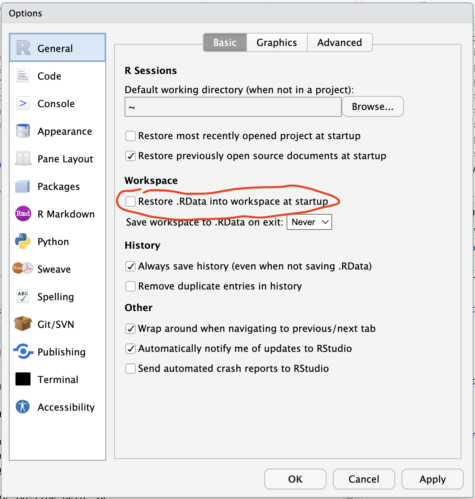
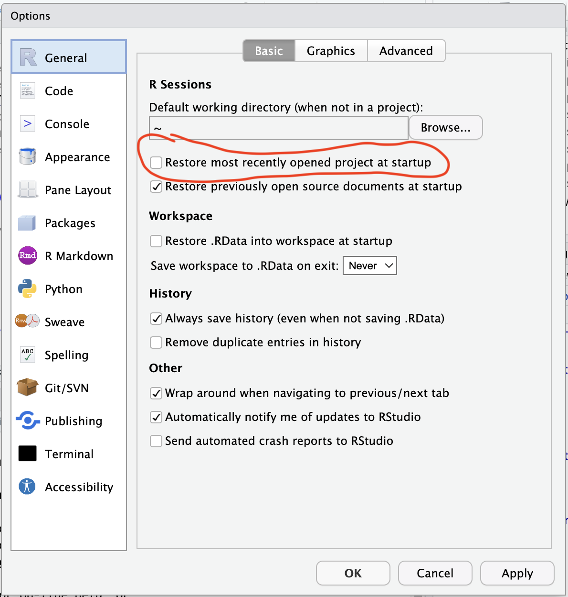
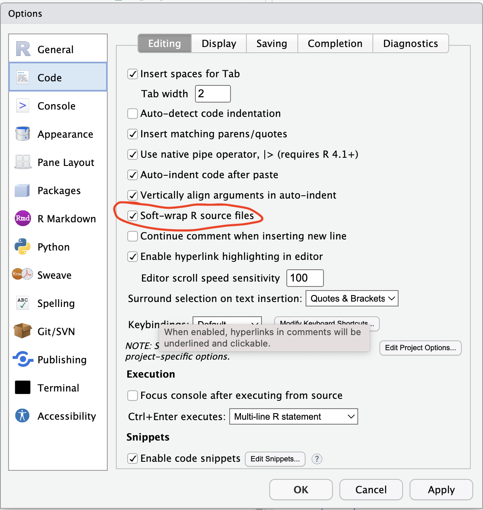
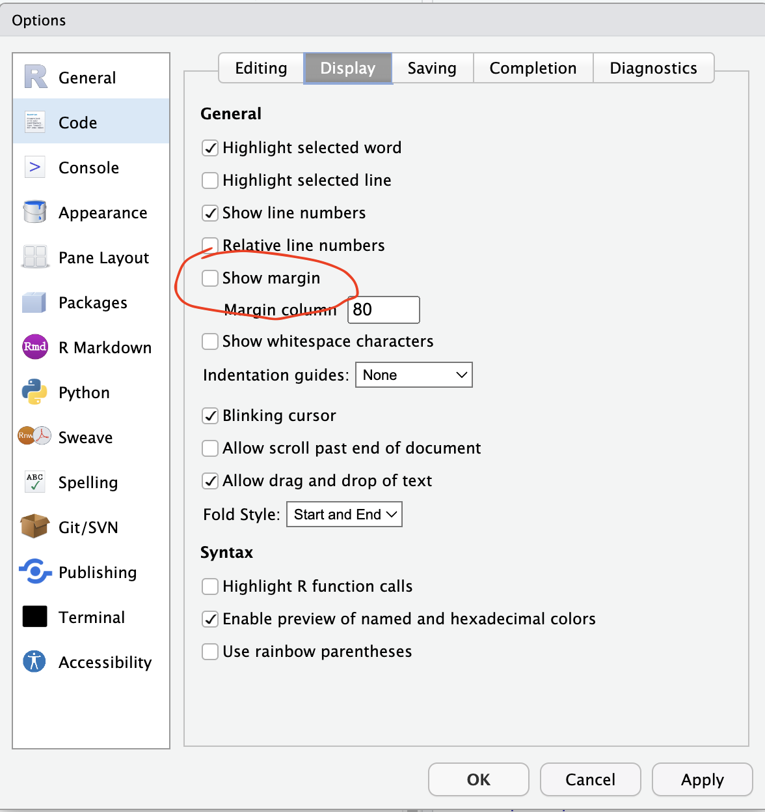
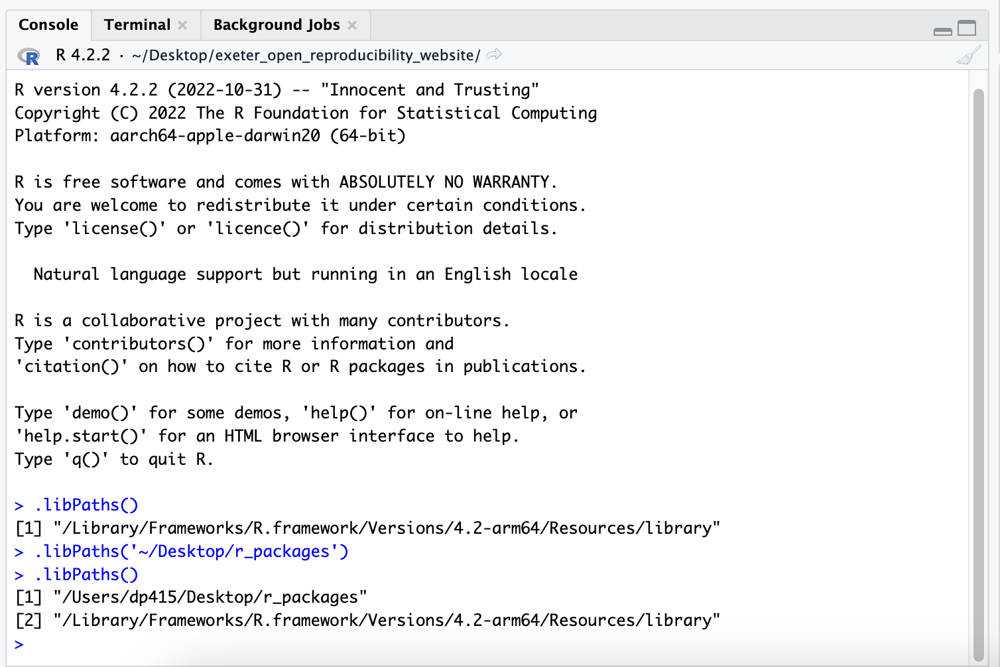
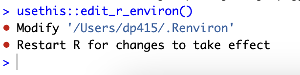
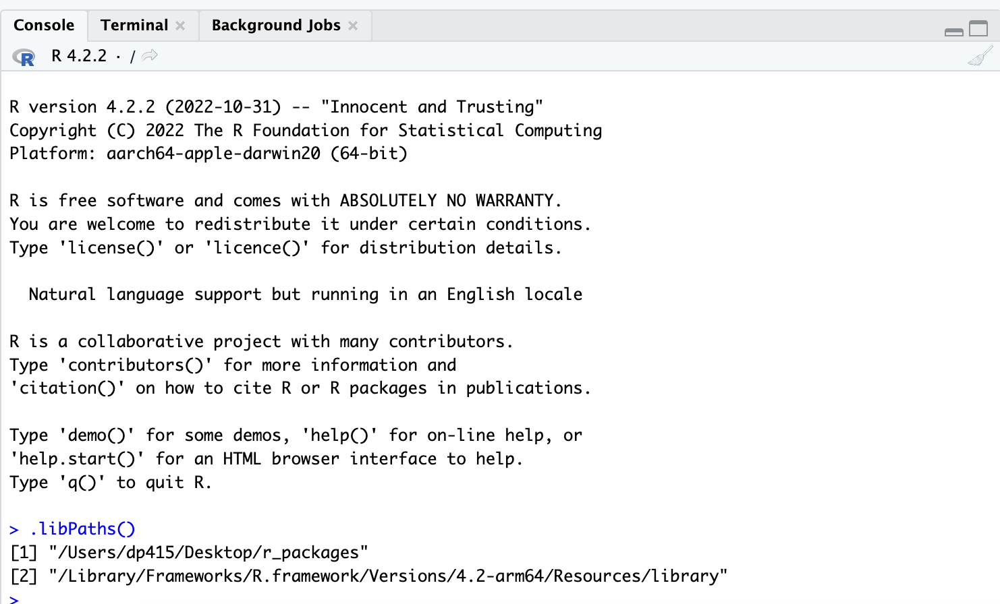
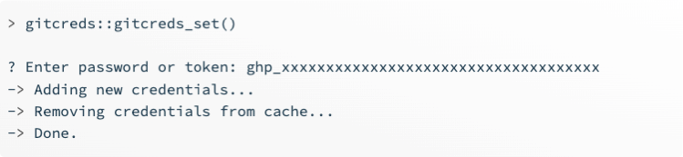
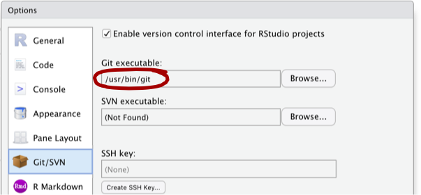

Outline
R is one of the most popular programming language for statistical programming in ecology, evolution, and conservation. It is also the language taught in the University of Exeter’s undergraduate and masters courses within the Centre for Ecology and Conservation.
RStudio is probably the most popular IDE for people using R. An IDE is an integrated development environment, which allows users to combine multiple aspects of software development in one place to make it easier to use. For RStudio, that means you have different panes that contain the R Console, your script, a file explorer, a pane where plots appear, and much more.
Git is a version control system that allows you to track versions of your files. It is popular when programming to be able to keep a history of all the changes you have made to your work, and be able to retrieve old instances of your work if you have made a mistake later down the line.
This post gives some details on how to install R, RStudio, and git. This information is mainly aggregated from other sources (see acknowledgements below), but there is some specific advice for Windows users for University of Exeter staff and students.
Prerequisites
- Be willing to endure some pain when installing things.
Learning objectives
This introduction should allow you to:
- install R
- install RStudio
- manage your R, RStudio, and package installation
- install git
Installing R
R can be installed from the Comprehensive R Archive Network (CRAN) here.
For Mac Users
Mac users should click the “Download R for macOS” link in the “Download and Install R” section. Click on the link for the latest version of R and click on the “Download R-[version].pkg” link to download the installer package. Open the downloaded file and follow the installation instructions. You can launch R by clicking the R icon on your Launchpad or in your Applications folder of your Finder, but we recommend using RStudio to code in R because it makes programming in R a much easier and more pleasant experience.
For Windows Users
Windows users should click the “Download R for Windows” link in the “Download and Install R” section. Click on the “base” directory and click on the link for the latest version of R. Then click on the “Download R[version] for Windows” link, open the downloaded file and follow the installation instructions. You can launch R by double-clicking the R icon on your Desktop or in your start menu, but we recommend using RStudio to code in R because it makes programming in R a much easier and more pleasant experience.
Installing RStudio
RStudio can be installed for free from the Posit (the company that was formerly known called RStudio) website here. RStudio is available for Windows, MacOS, and Linux. Just click the “Download RStudio” button and follow the simple instructions. Once you’ve installed RStudio, you can open it like any other program on your computer. Before you install RStudio, make sure you have installed R.
Some general tips for Global Options of RStudio
When setting up RStudio, there are a bunch of things you can change to configure your RStudio to how you like it. Some of these are likely personal, but we have some settings we like to use. These are settings you can change by clicking Tools -> Global Options.
- Unclick “Restore .RData into workspace at startup”. This means that each time you start a new RStudio instance, your environment starts clean and you can be confident that any results you have, or weird R behaviour, is not due to any previous code or session.

- Unclick “Restore most recently opened project at startup”. This means that when you start a new RStudio, it will open an RStudio not associated with a project. This is more of a personal preference of mine as more often than not I have multiple RStudio instances open not associated with the same work, and I got tired of closing the project of new RStudio instances.

- In the “Code” tab, tick “Soft-wrap R source files”. This means that instead of having long lines of code that go off of your source pane and require you to move from left-to-right to view them, the source pane instead “soft-wraps” them into a new line, while preserving the fact that they are, in fact, a single line of code.

- In the “Code -> Display” tab, unclick “Show Margin” which will get rid of the annoying line that can be present in the Source pane sometimes.

- I leave the default colours on for RStudio, but you can change to black background (and loads of other alternatives) in the “Appearance” tab.
Managing where your R packages install
Over many years, I have helped a fair few people at the University try and work out how to install R packages on their University computers. This has mainly been on Windows machines, and is most likely due to the lack of read/write access wherever R by default chooses to install packages.
Consequently, it might be good for you to choose a new location on your computer where your R packages will install. And if you cannot install R packages at the moment then we are here to help! You can learn how to do change the default location your R packages install into by watching this video, but we will whizz through the process here too.
Check where R is installing packages by typing .libPaths() into your R console.
Create a new folder which you would like to install packages, somewhere where you DEFINITELY have read/write access (e.g. “~/Desktop/r_packages”)
We can then change .libPaths() for this R session.

However, when we start a new R session, this change will be lost. To change it by default for R, we need to change our .Renviron file, which allows us to change variables that R looks for every time it starts. To easily manipulate this file, we will first install the R package usethis using install.packages(usethis). It should install into the new directory you have just created, for me it installed into “~/Desktop/r_packages”.
Run usethis::edit_r_environ() in your Console and it should open your .Renviron file in your source pane. From here, add R_LIBS_USER=“~/Desktop/r_packages” to it (obviously change the folder name to the folder you have created), click Save, and close the file.

- Now when you start a new R instance, your chosen folder should be present when you run .libPaths() and you should not have problems installing R packages anymore!

Installing git
To check if Git is installed on a Windows or Mac machine, follow these steps:
For Windows:
- Open the Command Prompt by pressing the “Windows Key + R” and typing “cmd” in the “Run” dialog box, or open “Git Bash” (or use the Terminal tab of your RStudio).
- Type “git –version” and press Enter.
- If git is installed, the version number of git will be displayed in the Command Prompt.
For Mac:
- Open the Terminal application by finding it on your Launchpad or Applications folder in your Finder (or in the Terminal tab of your RStudio).
- Type “git –version” and press Enter.
- If git is installed, the version number of git will be displayed in the Terminal window.
Even if git is installed, it is probably a good idea to update to the latest version. git has very good backwards compatibility so it is very unlikely that updating will break anything.
For Mac Users
Git can be installed on Mac from some of the options on the git website. Another alternative is GitHub Desktop, which will install the latest version of Git with itself if you do not already have it.
For Windows Users
Git can be installed from gitforwindows, but if you install GitHub Desktop, the latest version of Git will be installed if you do not already have it. With GitHub Desktop, you get a command line version of Git with a robust GUI.
Make a GitHub profile
Git is version control on your local machine, to share code with other you should create a GitHub (or GitLab) profile. Information on setting up a GitHub account can be found here.
Configure GitHub with local git and RStudio
Now we have git, R, and RStudio installed, and an RStudio profile, we need to make sure they can all talk each other, and that you can communicate with your GitHub profile from your local machine. An extensive walkthrough is available here, but we will cover the main steps.
First, we need to create an access token so that GitHub can securely link your local computer to GitHub. To do this go to https://github.com/settings/tokens and create an access token. For the scopes, I ticked most that I thought would be useful and understood, which were gist, repo, user, workflow. Make sure you name it something useful like “R:GitHubPAT” so that is makes sense if you ever need to make a new token.
Once this code is created, save it to your clipboard or in a text editor while we are storing it in your RStudio. Once you close the webpage you will never see this token again, so make sure you make a note of it! Then going forwards, treat this access token as you would a password. For some of you that might mean using a password manager, and for some of you that might mean a book, your hand, or post it notes on your computer screen.
We will use the R package gitcreds to associate your GitHub PAT with RStudio. First install gitcreds using install.packages(‘gitcreds’). If you want a way to be able to install and load R packages from CRAN, GitHub, and Bioconductor in a simpler way without calls to both install.packages() and library(), then I recommend looking at librarian!
Next run gitcreds::gitcreds_set() and follow the prompts. Specifically make sure you copy in your GitHub PAT!

Once you have set this, you can check it has stored properly using gitcreds::gitcreds_get().
This should mean you are ready to roll (i.e. Git and GitHub like a boss), but if you are getting stuck some common troubleshoots can be found here.
One thing you can check is that RStudo knows where your git executable is. In Tools -> Global Options, you can check where git is stored and being accessed from.

Summary
After this guide, you should have installed R, RStudio, and git on your machine, and also know a little more about how to check where your R packages are installing and some handy RStudio options.
Additional Resources
- This online book about using R and RStudio and git is incredible.
Acknowledgements
We did not create this content alone! Inspiration, tips, and resources have been borrowed from multiple sources.
- We took inspiration from this blog post about someone’s RStudio configuration.
- We watched this video on how to change the location for installing R packages.
- We enjoyed this thread on whether we should update our R packages regularly. In conclusion, yes probably.
- Some of the content was created using ChatGPT.